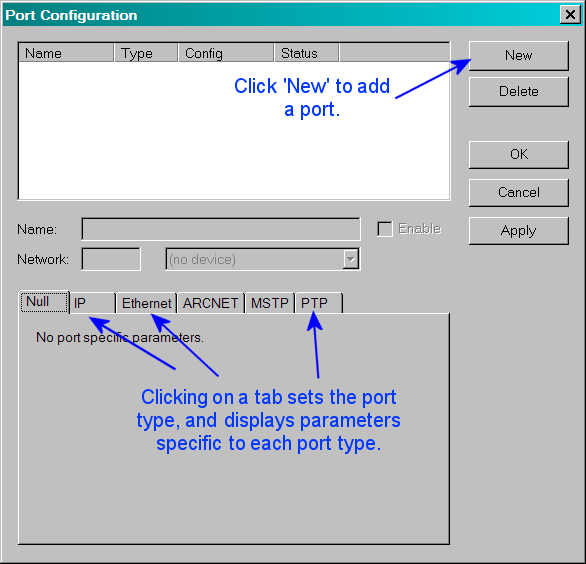
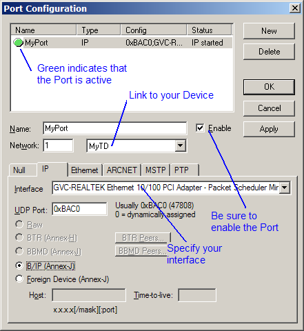
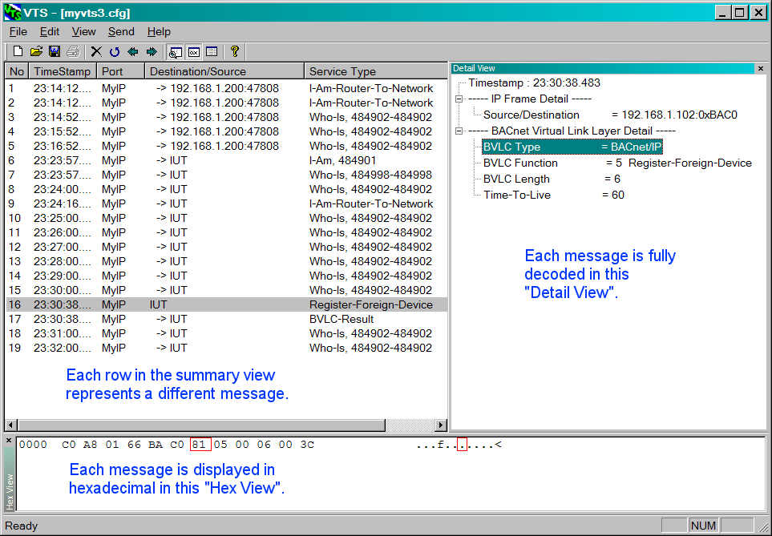

Visual Test Shell (VTS) is an application for testing the BACnet
functionality of various devices used in building automation
systems.
BACnet is a Data Communication Protocol for Building Automation and
Control
Networks developed under the auspices of the American Society of
Heating,
Refrigerating and Air-Conditioning Engineers (ASHRAE). For
information on BACnet, see http://www.bacnet.org
VTS 3.0 is the third generation of VTS. It is a complete
redesign and
rewrite of VTS and there are still some features missing and perhaps
even a bug
or two. VTS 3.0 has been turned into an open source project in
the hopes
that the users of this program will assist in making it a robust and
full
featured BACnet test tool. The home of the VTS 3.0 open source
project
is http://sourceforge.net/projects/vts/
.
Go here to find out what is new in this
release.
Platform Requirements
VTS 3.0 runs on Windows98, Windows NT 4.0 (Service Pack 4),
Windows2000, or Windows XP. It may also work on Windows95
systems, but there may be some
compatibility problems with several system DLLs on Windows95.
(WindowsME
has not been tested).
Quick Start Guide Contents
- Install WinPcap 3.0
- Install VTS
- Run VTS
- Configure VTS
- Create a Device
- Create a Port
- Create a Name
- Send a packet
- Analyze a packet
- Send a more complicated packet
- Analyze the response
VTS Release History
VTS Web Links
Step 1 : Install WinPcap 3.0
- Run the WinPcap installation program packaged with VTS. This
progarm is named WinPcap_3_0.exe.
- Follow the instructions on the screen. The installation applet
will automatically detect the operating system and install the correct
drivers.
If you later want to remove WinPcap from the system, go to the
control-panel, click on "add/remove programs" and then select
"WinPcap".
For details on WinPcap, check the WinPcap
home page.
WinPcap is Copyright (c) 1999 - 2004 NetGroup, Politecnico di
Torino (Italy). All rights reserved.
Redistribution and use in source and binary forms, with or without
modification, are permitted provided that the following conditions are
met:
- Redistributions of source code must retain the above copyright
notice, this list of conditions and the following disclaimer.
- Redistributions in binary form must reproduce the above
copyright notice, this list of conditions and the following disclaimer
in the documentation and/or other materials provided with the
distribution.
- Neither the name of the Politecnico di Torino nor the names of
its contributors may be used to endorse or promote products derived
from this software without specific prior written permission.
THIS SOFTWARE IS PROVIDED BY THE COPYRIGHT HOLDERS AND
CONTRIBUTORS "AS IS" AND ANY EXPRESS OR IMPLIED WARRANTIES, INCLUDING,
BUT NOT LIMITED TO, THE IMPLIED WARRANTIES OF MERCHANTABILITY AND
FITNESS FOR A PARTICULAR PURPOSE ARE DISCLAIMED. IN NO EVENT SHALL THE
COPYRIGHT OWNER OR CONTRIBUTORS BE LIABLE FOR ANY DIRECT, INDIRECT,
INCIDENTAL, SPECIAL, EXEMPLARY, OR CONSEQUENTIAL DAMAGES (INCLUDING,
BUT NOT LIMITED TO, PROCUREMENT OF SUBSTITUTE GOODS OR SERVICES; LOSS
OF USE, DATA, OR PROFITS; OR BUSINESS INTERRUPTION) HOWEVER CAUSED AND
ON ANY THEORY OF LIABILITY, WHETHER IN CONTRACT, STRICT LIABILITY, OR
TORT (INCLUDING NEGLIGENCE OR OTHERWISE) ARISING IN ANY WAY OUT OF THE
USE OF THIS SOFTWARE, EVEN IF ADVISED OF THE POSSIBILITY OF SUCH DAMAGE.
[ Next ] [ Home ]
Step 2 : Install VTS
VTS requires no installation. You may run it from the same directory
where it was originally extracted from
the zip archive. If you move VTS.EXE to a different directory, you must
also move the file PTP.DLL
to the same directory.
[ Next ] [ Home ]
Running VTS is as simple as double clicking on the application
(VTS.EXE) or
selecting Run from the Start menu and entering C:\VTS\VTS
(assuming that you moved VTS.EXE to the directory C:\VTS).
Workspaces (.cfg) and Logfiles (.vpk)
When you run VTS for the first time, a default workspace
file named vts3.cfg will be
created automatically, as well as a default logfile named vts3.vpk.
The workspace file contains all of the VTS configuration data,
such as Devices, Ports, Names, etc. The logfile contains the
packet data that is captured while running VTS.
Workspace files are updated automatically as the configuration is
changed - there is no need to save
the workspace. However, there is a selection under the File menu to
save the workspace
under a new filename for the purpose of creating multiple workspaces. A
workspace saved
in this manner can be loaded via the File/Workspace/Switch Workspace
menu selection. Only one
workspace can be loaded at a time. The name of the current workspace is
shown in the title bar. When VTS is run, the last workspace that was in
use is always reloaded.
Each workspace (.cfg) references one logfile (.vpk), which contains
packet data captured during a VTS session. Like workspaces, logfiles
are also saved automatically as packet data is generated. A different
logfile can be started without creating or loading a new workspace by
selecting Edit/Change logfile. This causes the current
logfile to be closed, and the user has a choice of creating a new
logfile or loading an existing logfile. Once
the logfile has been changed in this manner, any new packet data will
be appended to the new logfile, and
the current workspace will reference the new logfile.
Switching workspaces will switch to whatever logfile was last viewed
using that workspace.
To send a VTS session to a friend, both the workspace (.cfg) and
logfile (.vpk) must be sent.
[ Next ] [ Home ]
Step 4 : Configure VTS
Configuring VTS involves three steps:
- Create one or more Devices, and optionally, Objects within those
Devices
- Create one or more Ports
- Create Names as shortcuts for BACnet Addresses
Each of these steps is performed by selecting the appropriate menu
item from the Edit menu as shown below.

Each of the individual configuration steps is described in the
following sections.
[ Next ] [ Home ]
Step 6 : Create a Device and Objects
This section is for creating Devices and Objects that are hosted
within the VTS program.
In other words, Devices and Objects created here will exist inside the
VTS workstation for the
purpose of providing test Devices and Objects that can be accessed from
an external BACnet client
application that is being tested. If an external client sends
ReadProprty or WriteProperty requests
directed at the Devices and Objects created here, VTS will
automatically respond to
those requests.
Note that this section is not for configuring Devices and
Objects that reside in the implementation being tested by VTS. That is
done by loading an EPICS file while a script
window is open.
Right click in the tree area to display a menu for adding Devices or
Objects.
Select each Device or Object to present some basic properties that can
be edited for each Object.
There is no need to click the OK button after each Object is
added. Simply keep right clicking within the tree to add more Objects,
and then click OK when finished. Clicking the
Cancel button will cancel all of the changes that were
made since the dialog box
was first displayed.

Here is an example showing two Devices with some Objects within each
Device. (The standard Properties of each standard Object type are not
yet supported.)

[ Next ] [ Home ]
Step 6 : Create a Port
A port is a communications endpoint that sends and receives packets.
Some
ports are associated with a physical interface such as an Ethernet
communications card, and others such as IP ports are associated with a
UDP port.

For BACnet/IP ports, the socket 0xBAC0 (or 47808) is the typical
socket
number.

When a port is enabled, it is available for sending and receiving
packets,
and the status indicator will be green. If
the status indicator is red, there is some problem enabling the port
and a
description will appear in the status column.
Ports are not actually created or enabled until the OK or Apply
button is clicked. (This is different than previous releases of VTS,
which
created the port while it was being configured).
Note: Associating more than one port to the same Device will cause
VTS to
function as a BACnet Router between those ports, which is usually
unexpected
behavior and might cause some scripts to malfunction.
[ Next ] [ Home ]
Step 7 : Create a Name
A name is a shortcut for an address. Names are used in the
source and
destination address areas of ports, as well as the SNET and DNET
portion of the
BACnet network layer. Select Names from the Edit menu and you will be
presented
with the following dialog box:

Notice that there is already a name TD (common abbreviation for Test
Device)
defined and given the address of the port. If this was an Ethernet
port, TD
would be the Ethernet address of the port.
Click New, change the name to IUT, and then enter the address of the
implementation under test. The IUT name has special meaning
in VTS because scripts will automatically SEND and EXPECT messages from
whatever address is associated with the IUT name as long as an explicit
destination address is not specified in the script.
Click New, change the name to LB, and click on the Local Broadcast
radio button.

The LB name will now represent a local broadcast address for any
port. For an
Ethernet port, this is the address FF:FF:FF:FF:FF:FF, for an IP port it
is the
address 255.255.255.255:47808. Click on the OK button to close the
dialog box.
[ Next ] [ Home ]
Step 8 : Send a packet
The most basic function of VTS is to send and receive packets and
decode
them. Click on the Send menu and you will see a menu that looks like
this:

The MyIP name that is selected is the port created in Step 6. There
is only
one enabled port, so it is selected by default, and below the port is a
hierarchical menu of families of types of packets. The BVLL menu has
BACnet/IP
specific packets such as Register-Foreign-Device. The Network menu
contains
BACnet networking packets such as Who-Is-Router-To-Network. The other
menus are
common groups of application layer messages.
Select Register-Foreign-Device from the BVLL menu. You will be
presented with the following dialog box:

The central feature of the dialog box is a set of tabbed panels, one
tab for
each layer in the packet. The Register-Foreign-Device message has only
one
parameter, the Time-To-Live. This is a required parameter, as indicated
by the
error message in the text area below the panels.
Enter a time-to-live in seconds.
When a parameter in the packet contains valid information, other
parameters
in other panels are verified to contain correct content.

Enter the destination address for the packet by selecting the IP
tab. The destination address may be provided by entering an IP address
in the
text area, or selecting a name from the drop down menu. In this case,
a default address was selected automatically because the 'IUT' name
was defined in step 7.

Click on the Send button.
When the packet is well formed, the encoded content will appear in
the text
area below the panels. This may be edited before sending to test how a
device
responds to malformed packets. In the session window you will see an
indication
of a packet that has been transmitted.
Close the Send dialog box.
The Send dialog box is designed to be non-modal, so it is not closed
automatically. The packet contents can be modified and sent again.
[ Next ] [ Home ]
Step 9 : Analyze a packet
The session window contains three panes. The summary view on
the left
has one line per packet and provides general information such as the
packet
number, time it arrived, source and destination addresses, and a brief
description of the packet. The detail view in the upper right
contains a
complete decoding of the packet contents. The hex view in the
lower window
displays the binary content of the packet using hexadecimal notation.

The three views are synchronized so selecting a detail row will
highlight the
hex encoding of that specific portion of the packet with a red box.
The Detail and Hex views can be rearranged within the VTS window by
dragging their title bars to the desired new location. The dividers
between the views can
also be moved to resize the adjacent views at the same time.
[ Next ] [ Home ]
Step 10 : Send a more complicated packet
For the next example, send out a global broadcast Who-Is packet.
Select Who-Is from the Remote Device Management submenu. You will
be presented with the following dialog box.

The device instance low limit and high limit are optional parameters
in the
message. By leaving both fields empty, the request will indicate that
all
devices must respond.
Select the NPCI tab.
A Who-Is request is usually sent out as a global broadcast, so the
DNET is
present and has the value 65535.
Select the BVLCI tab.

Assuming the PC is connected to a BACnet/IP network, this message
should be
sent out as an original broadcast message.
Select the IP tab.

Select the LB name for the destination address so that the WhoIs
request is sent as a local broadcast. Notice that the correct broadcast
address is filled in in teh numerical address edit box.
Click Send, then close the dialog box.
[ Next ] [ Home ]
Step 11 : Analyze the response
Here is a sample captured from a test network. Note that two Devices
answered
the Who-Is request with the I-Am service.

[ Next ] [ Home ]
3.0b2
Cleaned up support of EPICS references in Expect statements.
3.1.4
Added function key shortcuts. New support for device objects. Fixed
about box to generate a version string at run time.
Added support for the following objects: averaging, multi-state-value,
and trendlog;
and all associated properties, EXCEPT: The Log_Buffer property of the
TrendLog object.
These changes enable VTS to handle the presence of the new objects in
the EPICS.
They also allow the user to perform Object Access services (in the
interacterive mode) on devices containing these objects. Cleaned up IP
address issues in scripting. DA and SA parameters may now be IP
addresses vs. octet strings.
3.1.5
Script support for device object. Includes changes that were made as a
result of the Manchester plug-fest, including significant improvements
in application layer scripting. It also includes bug fixes in the
internal router code, along with buffer overflow bug fixes. Cleaned up
a decoding bug with DNET numbers (being treated as a signed integer and
then extended to 32 bits).
3.1.6
Added ReadRange support, but only for the Send window - no support in
scripts yet.
Fixed a TimeSynch encoding bug.
3.1.7
Added the Send UTCTimeSynch service. Minor improvements in the Send
ReadRange interface. Added a document to the release that provides
instruction on how to use VTS 3 for testing BACnet devices.
3.1.8
- Session data is now cleared, so it doesn't grow continuously, but
is not compressed.
- The Send windows have been sized up to make room for more buttons
and clearer indicators.
- The IDD_SENDREADPROPMULT, IDD_SENDREADPROPMULTACK and
IDD_SENDWRITEPROPMULT dialog boxes now have shuffle-up and shuffle-down
buttons. (May still need some work.)
- All of the Send dialog boxes that have lists now have 'Show
selection always' turned on, which doesn't always seem to do what it's
supposed to.
- There is now an automatic invoke ID for the send window. It is
incremented when the Send button is clicked. The value is saved in the
preferences (registry), so it comes back for the next VTS launch. Note
that this is NOT the same invoke ID that will be used by a built-in
device object, and that is by design.
- Now checks the version of BACMACNT.SYS it can find. Only version
3.0 works.
- Added decoding of UTCOffset and DayLightSavingStatus to the
UTCTimeSynch service.
- Changed the UTCOffset range from +/- 720 to +/-780.
- Line numbers have been added to script windows, with a way to "Go
to" a line number via a new menu option.
- The font was changed in script windows so that consecutive dashes
would not appear as one long dash.
- A menu item "Export" has been added for exporting the session
contents to an ASCII file. The ASCII file includes the summary and
detail information.
- Fixed a bug in decoding the BACnetEventTransitionBits datatype.
- The 3 panes of the main view (summary, detail, and hex view) can
each be sized, rearranged, and selectively hidden.
- A statistics view has been added that shows statistics in real
time. The statistics include:
- The overall traffic load
- The packet count of one or several kinds of messages. For
example, how many Who-Is packets are received/sent, how many Alarm
& Event packets are received/sent etc.
- The packet count of packets that fall into 3 different
user-specified size categories.
- When the user double-clicks on a line in the outline view of a
script, the script view will jump to the corresponding line.
- Support was added for the Active_COV_Subscriptions Property of
the Device Object.
- Support was added for the Profile_Name Property.
3.1.9
- Added PTP Support
The PTP data link layer has been added in this release. It
launches a separate process and displays transmit and receive logs that
are specific to PTP. There has been very little testing on this
feature, so please use it with caution. If any bugs are discovered in
the PTP implementation, please report them here.
- Fixed problems parsing these BACnet Properties:
- Recipient_List
- Weekly_Schedule
- Exception_Schedule
- List_Of_Object_Property_References
- Fixed a problem in the vertical scrolling of the Script Edit view.
- Fixed a problem that caused VTS to crash if a line in the detail
view of the sniffer was too long.
- 590282: Added an easy way for the user to delete the current log.
- 598977: Fixed a problem with the Names configuration dialog box
not refreshing properly.
- Packaged the correct version of BACMACNT in this release. This
should allow users running Windows NT to utilize the BACnet/Ethernet
data link, but there have been many problems reported with this, and it
definitely does not work on Windows XP systems. The eventual solution
is to replace BACMACNT with a WinPcap
library interface, which will also enable promiscuous BACnet/IP
sniffing.
- User interface enhancements to the ReadPropertyMultiple,
ReadPropertyMultipleAck, and WritePropertyMultiple Send dialogs.
- Increased the size of the drop down combo boxes to show more
Properties.
- When adding a new Property, the default of Present_Value is
automatically added, then the user must edit this addition to the
Property of his/her choice. Previously, a blank was added to the list
of Properties, and the user could get confused as to whether the Add
button had any effect.
- General cleanup of many list controls.
- ReadBDTAck
- Added controls for IP / Port creation instead of edit box
- Address defaults and appears in list, rather than empty
space item
- List keeps selection, preventing GPF in removals of list
items
- ReadFDTAck
- Added controls for IP / Port creation instead of edit box
- Address defaults and appears in list, rather than empty
space item
- List keeps selection, preventing GPF in removals of list
items
- Changed tab order of dialog items
- IAmRTN, RouterBusyToNetwork, RouterAvailToNetwork, InitRT,
InitRTAck
- Default '1' for DNET address, port (where applicable)
default to 0xBAC0
- Address defaults and appears in list, rather than empty
space item
- List keeps selection, preventing GPF in removals of list
items
- UnconfCOVNotification, ConfCOVNotification, CreateObject
- Default 'Present_Value' for property
- Property value appears in list, rather than empty space
item
- List keeps selection, preventing GPF in removals of list
items
- VTClose, VTCloseAck
- Default '1' for Session ID
- ID appears in list, rather than empty space item
- List keeps selection, preventing GPF in removals of list
items
- WriteFile, ReadFileAck
- Default '(record data)' as string for adding data
- Character data no longer needs to be placed in quotes in
edit box (see below)
- Data appears in list instead of empty space
- List keeps selection, preventing GPF in removals of list
items
- ReadPropMult, ReadPropMultAck, WritePropMult
- Default object ID
- Defaulted data appears in list instead of blank space item
- Resized property drop-downs
- List keeps selection, preventing GPF in removals of list
items
- GetAlarmSummaryAck, GetEnrollmentSummaryAck
- Default object ID and state
- ID and state appear in list instead of empty space
- Enabled transition checks - checks were previously always
disabled
- List keeps selection, preventing GPF in removals of list
items
- Changed 'property' label to 'Event State' for proper field
- ComplexObjectType
- Default 'Present_Value' in list
- Property appears in list instead of empty space
- Disabled controls on dialog start when no items in list
(formerly enabled)
- List keeps selection, preventing GPF in removals of list
items
- VTSAny
- List keeps selection, preventing GPF in removals of list
items
- 511345, 511412: Charstring handling
User was unable to see char string entered for passwords in DCC
& Charstring was apparently not sent to device in WP/WPM. This
problem was actually caused by the method for entering char strings in
edit boxes. Single or double quotes were required within the edit box
to properly input the desired text for passwords, messages, names,
etc.. Strings were using the script parser to identify strings but this
is not necessary in the UI. Edit fields requiring strings throughout
VTS have been altered accept what is entered. If quotes are present,
the quotes are assumed to be part of the text and sent to the device in
the relavent BACnet message. This change effects the following areas:
- SendAckAlarm -> ack source
- ConfirmedEventNotification -> message text
- ConfirmedTextMessage -> character class, text message
- DeviceCommunicationControl -> password (original bug
report)
- IHave -> object name
- ReinitializeDevice -> password
- Test? -> character string
- UnconfirmedEventNotification -> message text
- UnconfirmedTextMessage -> character class, text message
- WhoHas -> object name
- Any -> character string
- 444134: Auto Segmentation Support
User can now select a device from the Send menu, or the port
drop down menu. There is a new Device page which is looking for a
destination address (type, network, and address) and the outgoing APDU
will be set to that address. The device object will take care of
segmentation, retries, etc, as necessary. Properly configuring a
built-in device object and binding it to a port will be part of a
separate document.
- 511406: Status flags in a variable comp fails
Comparisons for status flags in RP/M, WP/M work properly now.
This problem was caused by reading one byte passed the encoded PDU for
the bitstring. The comparison failed because the tag was being
interpreted as part of the incoming bitstring.
- 508646: rp to UTC_Offset fails in a script
Comparing the returned UTC_Offset value in a script to EPICS
failed because the data type used in VTS's internal structures for
UTC_Offset was a float instead of int. This has been corrected by
changing it's internal type to 'ssint' and processing accordingly.
- 508643: VTS3 unable to read device-address-binding(RP, RPM)
'Property value not known' was returned correctly when
comparing device-address-binding to EPICS when the value was '?'. It
returned this error incorrectly when the EPICS value was defined as
empty (). It now compares the valid empty condition. This error would
also show up on other non-primitive data types whose value could be
empty ().
- 508640, Array bugs in rp (1E,1F,1G)
Case 1E has been fixed by creating a BACnet type class
structure that will facilitate easier type comparisons. Cases 1F and 1G
are errors in the script parser that don't deal with array indices.
(See below)
Reworked implementation for comparing data in EXPECT statements
from values retrieved from EPICS and specified in scripts. Any AL value
being compared to EPICS data was using a method to match encoded
streams. This scheme would fail in cases where numbers used different
encoding sizes, different type comparisons that are legal (such as
float vs. null in priority arrays) and many other. More detailed
comparisons were impossible with this method because VTS had no way of
determining the type of data and could not determine the proper end of
the stream, among other reasons.
To implement type specific comparisons for all possible BACnet
data types, including arrays, lists and complex structures, the c++
class representation for BACnet data types has been extended. These
classes serve as a foundation that allows the use of more tools (MFC,
polymorphism, etc.) to facilitate feature additions and more
flexibility where BACnet data type are concerned. Type specific
matching methods, display methods, decoding, assignment and comparative
operators are now available.
Using these classes to perform decoding and comparisons in the
heart of EXPECT statements required the need for a retreval method to
access the internal EPICS structures and convert them to BACnet type
classes. The immediate result of these changes can be seen in more
meaningful text in test fail results. In addition, comparisons can now
be made to the following data types:
- Unsigned values - all sizes.
- Integer values - all sizes.
- Real and doubles.
- Priority arrays for floats, reals, enumerated and NULL
choices. Indexes not supported yet from sript parser yet but
comparisons are ready.
- Boolean.
- Bit strings.
- Object IDs.
- Character strings - any size.
- Enumerated values.
- Date values - all comparison operators.
- Time values - all comparison operators.
- DateTime values - all comparison operators.
- DateRange - all comparison operators (where applicable).
- Calendar Entries and lists.
- Device Address Bindings.
- Array of object identifiers.
- Arrays and lists of unsigned values.
- Arrays of text for active/inactive.
Notes for future enhancements:
The following type comparisons are not implemented
yet:
- List of read access specs.
- Action commands and arrays of action commands.
- VT classes.
- Event parameters.
- Session keys.
- Time Synch recipients.
- Recipients.
- List of Recipients.
- Array of exceptions schedule events.
- Array of weekly schedules.
- List of object property references.
- Setpoint reference.
- List of active VT sessions.
Adding support for these remaining types is simply a matter of
constructing the object from the EPICS internal structures and decoding
the object from a stream. The mechanisms for performing the comparisons
are already in place. The development of support for proprietary
objects in EPICS and scripts will be assisted by BACnet classes as
well.
Other benefits of this work will be seen later as the EPICS
store gradually converts to store data internally in these classes. The
greatest benefit to this foundation work will be seen as data becomes
extractable from Complex Acks either compared, tested or even assigned
to variables of complex types in scripts. Additionally, script parsing
will be effected by these changes once all of the data types are
supported and proper scanning methods for each will allow a single
source code source for the creation of such objects.
Most of the SEND methods have been altered to retrieve EPICS
data using these classes as well as creation and encoding of send
streams from these object types. Specifically, the following classes
have been added or altered:
- All BACnet classes enhanced with Runtime type declaratives,
ToString and Match virtuals.
- Most classes now have constructors that take an APDUDecoder
to construct the value from an encoded stream.
- BACnetEncodeable now decends from CObject, added Match and
ToString virtuals.
- BACnetAddr
- BACnetUnsigned
- BACnetCharacterString
- BACnetBinaryPriV
- BACnetCalendarArray
- BACnetCalendarEntry
- BACnetDate
- BACnetDateTime
- BACnetDateRange
- BACnetTime
- BACnetTimeStamp
- BACnetWeekNDay
- BACnetObjectIDList
- BACnetGenericArray
- BACnetObjectContainer
- BACnetAnyValue (to facility "any" type flexibility - but
mostly to encapsulate dynamically allocated objects for proper
destruction when there's so much 'throwing' goings on...).
Case 1F (test for size of array [0]) and case 1G
(test of single index value in array [int]) have also been fixed.
Indexing into array properties is now supported in the following
manner:
{property[int]}
- or -
{property[var]}
The index must either be a literal integer or a variable which resolves
to an integer.
- 617618: RPM MAX script crashes VTS
This problem was caused during an attempt to reallocate an APDU
buffer to accomodate a larger size APDU. The problem has been fixed.
VTS no longer crashes. Proper segmentation should occur.
- 618176: EXPECT needs "Don't Care" arguments
This feature was added to allow a script to test for the correct
tagging in an EXPECT statement without regard to the actual data value.
Expressions within an EXPECT statement now support the don't care
operation. Equations and values can be specified as don't care in one
of the following ways:
- Replace the value in the right side of an expression with
'?'. For example:
Unsigned = 1, ?
Bitstring = 2, ?
Real = 3, ?
In the example above, the EXPECT statement will fail if the packet does
not contain a context 1 unsigned integer, followed by a context 2
bitstring, followed by a context 3 real, but the actual values of each
of the data values is discarded. This can prove useful if one or more
of the parameters expected cannot be pre-determined, such as a time
stamp. If the expected data is application tagged instead of context
tagged, then the following is also valid:
Unsigned = ?
Bitstring = ?
Real = ?
'?' can also be used for always matching addresses returned for EXPECT
statements when applied to:
- WriteBDT
- BVLLResult
- ReadBDTAck
- ForwardedNPDU
- RegisterFD
- ReadFDTAck
- DeleteFDTEntry
- WhoIsRouterToNetwork
- IAmRouterToNetwork
- ICouldBeRouterToNetwork
- RejectMsgToNetwork
- RouterBusyToNetwork
- RouterAvailToNetwork
- InitializeRoutingTable
- EstablishConnectionToNetwork
- DisconnectConnectionToNetwork
'?' is not valid for AL type data where the datatype is
determined by the EPICS reference on the right side of the expression.
'?' can only be used if the left side of the expression specifies the
datatype.
- Use of the don't care operator: '?='
For example:
Unsigned ?= 20
Bitstring ?= F, T
AL ?= {EPICSReference}
Use of the don't care operator '?=' within an EXPECT
statement will cause the data stream to be parsed correctly according
to the data type but the value will not be tested. This operator works
on primitive types (Unsigned ?= 20) as well as the AL data. The value
on the right of the operator must be valid for the datatype. EPICS
references for AL expressions must be valid in order to determine the
data stream type.
The '?=' operator is more flexible than the '?' data
matching method, but the '?' is provided for clarity in simpler
expressions. For example:
Unsigned = ?
is easier to understand than:
Unsigned ?= 9
where the '9' is superfluous. But both formats accomplish the same
thing.
- Date / Time Improvements
Several changes have taken place in the handling of the
primitive Date and Time data types. The listing here does not include
other improvements that were made concerning script variables (reported
later in this text). Unless noted, both the Date and Time data type
handling were affected equally by these corrections and enhancements.
- The Date and Time data types were not accepting a script
variable
substitution when used in Send and Expect statements. Full support for
receiving Date and Time values from variables has been added.
Substitutions
will take the standard form in Expect and Send statements:
Date = tag, VAR
Date = VAR
Time = tag, VAR
Time = VAR
Date = VAR (where VAR = tag, [value])
Time = VAR (where VAR = tag, [value])
- The Date and Time data types were having trouble comparing
don't care values '?' or '*'. '?' characters in a field of a Date or
Time variable are now considered to be wildcards that match any value
in the corresponding field of the Date or Time being compared, whereas
the '*' character only matches the BACnet "unspecified" value
of X'FF'. In other words, '*' is not a wildcard, but a symbol that
represents the unspecified X'FF' value.
- Added support for the don't care value that other data types
recently
support. '?' can be substituted for a Date or Time value and the
comparison
will return true. Ex: (Date = tag, ?) will pass the comparison in an
Expect statement. ? substitutions are not valid in Send statements.
- Date and Time values specified in EPICS that had don't care
values would
not be allowed in references. Date = {Local_Date} would fail because
the
script executor thought data wasn't defined in EPICS for that property.
This restriction has been removed and now supports all combinations of
don't
care specifications (?/?/?).
- Full comparison support has been added to the Date and Time
primitive
types. <, >, =, !=, <=, >=, ?= and >> (see below)
have been added. This
includes date and time values that have the don't care specification.
- The Date and Time primitive types had various parsing
problems. This
particularly true when Date and Time values were used as expression
parameters when other parameters were present. Tag values were
especially
troublesome because they introduce another parameter in the expression
that
is only separated by a comma, which is also used to separate values in
the
date. Here is an example of a pre-3.1.9 assignment:
Date = tag, dow, n/n/n
With this syntax, parsing the day of week and/or the tag was
difficult due to data values for
complex types being mixed with parameter in an expression. These
problems
have been cleaned up by adding the following requirements to data types
whose ASCII format requires multiple values. These kinds of values are
considered complex data types and the Date and Time types fall into
this
category. Other values (lists, calendar entries, and other not-yet
implemented value specifiers) also fall into this category.
Text representations of complex data types now require the
use of brackets '[]' to separate their data from other parameters.
The brackets are required even if no other parameters in an expression
are present. The Date and Time text representations now take the
following form:
Date = [dow, mm/dd/yy]
-or-
Date = [dow, mm-dd-yy]
Time = [hh:mm:ss.HH]
- dow = 3 characters (case insensitive) for
MON, TUE, WED, THU, FRI, SAT, SUN. This value must be present and can
be substituted with ? as in [?, mm/dd/yy]. A comma separates
this value and leading and trailing spaces between each atomic type are
ignored (i.e. [? , mm / dd / yy] is the same as [?,mm/dd/yy]).
- mm, dd, yy, hh, mm, ss, HH = numeric
values with leading or no zeros. Values are checked for validity in
every case except invalid dates as a whole (Feb 31st).
- yy = Year specification given as either
the full year (2002) or a partial year (02). Values interpreted as
partial years range from 1941 to 2040. '23' indicates 2023 whereas '45'
indicated 1945. '98' indicates 1948 and
'00' indicates 2000.
- HH = hundredth value in the range 0 - 99.
This value is optional in the text representation. If the period is
present in the text, the value MUST follow or a parsing error is
generated and the Time is invalid.
Any and all values can be substituted with the don't care
value ?. For example: [12:?:44.?]. Enclosing these complex
representations inside brackets gives clarity to expressions with
multiple parameters as in the case of tag specifications:
Date = tag, [TUE, 11/4/02]
-or-
VAR = [TUE, 11/4/02]
Date = tag, VAR
Bracketing this compound data can be nested as in the case
of the text representation for a DateTime and DateRange:
DateTime = [DATE, TIME] = [[dow, mm/dd/yy], [hh:mm:ss]]
DateRange = [DATE1, DATE2] = [[dow, mm/dd/yy], [dow, mm/dd/yy]]
DateTime and DateRange are not considered primitive types
and currently can
only be used when referencing EPICS data and so a text representation
for
these types has not been needed as yet. The addition of variable
assignments tends to usher in the requirement for these
representations.
How text representations are interpreted as certain data types requires
a
solution, as referenced in the following section on variable
assignments.
One final note on the bracketing of compound data is that,
like quotes for
strings, the brackets are only necessary in situations where other
types of
data may be read as well. Brackets are not necessary when date and time
values are specified inside edit fields within the VTS user interface.
They
are, however, necessary in scripts and subsequently, like quotes,
necessary
inside script parameter data, since this data is partially parsed.
- 444200: Extract data from incoming packets
Support for stuffing incoming data elements into script
variables has been added throughout the EXPECT statement, except where
noted. Syntax for the new operator '>>' in assignments take the
following form:
Keyword >> VAR
-or-
Keyword >> tag, VAR
The above assignments will place a text representation of the
incoming data given by the keyword into the script parameter VAR. The
assignment that contains the 'tag' parameter is used when the encoded
data is expected to be context tagged instead of application tagged. The
VAR parameter MUST be previously created in the SETUP section of the
script or an error will be reported.
The first form assumes no tag is present and the data is removed
from the stream and placed in the VAR. If a tag is expected (as found
in the incoming packet), and error will be reported. The second form
allows the testing of a context tag first and then an assignment into
the variable. The tag will NOT be present in the new assignment. The
contents of VAR will NOT be interpreted prior to assignment. This is
relevant because it is possible to have statements:
VAR = tag, value
Keyword = VAR
... which resolves to:
Keyword = tag, value
... and the tag is tested.
Thus, it would be conceivable to allow:
VAR = tag, VAR2
Keyword = VAR
... which might resolve to:
Keyword = tag, VAR2
... and finally place the decoded value in the VAR2 parameter. But this is not supported.
The data will be placed in script parameters in a text format
that can be
re-decoded for use in comparisons in other expressions. Each text
format
will be determined by the appropriate type. The following assignments
are
legal for these data types:
Boolean >> VAR ;Assigns: Set
or Reset
Unsigned >> VAR ;Assigns:
Number
Integer >> VAR ;Assigns: Number
Real >> VAR ;Assigns: Real
Double >> VAR ;Assigns: Real
OctetString >> VAR ;Assigns:
X'nnnnnn'
BitString >> VAR ;Assigns:
B'0102010'
CharacterString >> VAR ;Assigns:
"Char"
Date >> VAR ;Assigns: [dow,
mm/dd/yy]
Time >> VAR ;Assigns:
[hh:mm:ss.HH]
Enumerated >> VAR ;Assigns:
Number or KEYWORD if enumeration table is known
(as in the case of Boolean). Support for this can be incremental.
Object >> VAR
-or-
Object >> tag, VAR
Expects and Object Identifier and assigns 'OBJECT-TYPE, Number' to VAR.
In other words, this type of assignment will place the object type
keyword AND the object instance number inside the script parameter
value. (Note that the object really falls
in the compound data class and would best be served by bracketing the
type
and instance together [type, instance]. This was NOT implemented
because
too many scripts would require alteration).
Property >> tag, VAR
Expects a context tagged Property Identifier and assigns it to VAR. The
property keyword (i.e. PRESENT_VALUE) will be placed inside the
variable. This will be properly decoded and compared in other equality
expressions in the current or upcoming EXPECT statements.
(OpeningTag and ClosingTag do not support the assignment
operator).
VERSION >> VAR ; Assigns:
Number
PRIORITY >> VAR ; Assigns:
Number
DER >> VAR ; Assigns: Boolean
(Set or Reset)
DNET >> VAR ; Assigns: Number
SNET >> VAR ; Assigns: Number
HOPCOUNT >> VAR ; Assigns:
Number
NEGATIVEACK >> VAR ; Assigns:
Boolean
SERVER >> VAR ; Assigns:
Boolean
INVOKEID >> VAR ; Assigns:
Number
ABORTREASON >> VAR ; Assigns:
EnumeratedKeyword (SEGMENTATION-NOT-SUPPORTED)
REJECTREASON >> VAR ; Assigns:
EnumeratedKeyword (INCONSISTENT-PARAMETERS)
WINDOWSIZE >> VAR ; Assigns:
Number
SEQUENCENR >> VAR ; Assigns:
Number
SETACCEPTED >> VAR ; Assigns:
Boolean
MOREFOLLOWS >> VAR ; Assigns:
Boolean
ERRORCHOICE >> VAR ; Assigns:
EnumeratedKeyword ()
SEGMESSAGE >> VAR ; Assigns:
Boolean
SERVICE >> VAR ; Assigns:
EnumeratedKeyword (ACKNOWLEDGEALARM)
PDU >> VAR ; Assigns:
EnumeratedKeyword (CONFIRMED-REQUEST)
MAXSIZE >> VAR
Assigns: Enumeration of ("50", "128", "206", "480", "1024", "1476") or
Number if less than 16. If VAR now contains a number, it will be
converted to code if VAR is then used in a SEND.
NETWORK >> VAR
Assigns: CharacterString for currently defined port (in quotes).
SADR >> VAR
DADR >> VAR
Both of these assign a CharacterString for the defined name of
the device if known,
OctetString if not.
An error was discovered and corrected concerning the
specification of DNET/DADR and SNET/SADR pairs in the script. The test
for whether or not these pairs were present in the received packet was
being determined by whether or not the DNET/DADR keywords were supplied
in the script. This was causing the script to have hard-coded
expectations about whether the IUT was behind a router or not.
BVLCI >> VAR
Assigns: BVLCI type, i.e. READ-BROADCAST-DISTRIBUTION-TABLE-ACK
{,host/net:port}*
MESSAGE >> VAR, ?, ?, ?
Assigns the network layer message type to VAR.
A special note about these two keywords: MESSAGE and BVLCI.
These
keywords have parameters that follow which dictate how the values are
extracted from the received packet. As VTS is currently coded,
assignment
of all of the parameters into a VAR is impossible because the number of
parameters that are specified in an equality expression determines what
data
to extract. For example: Assignments of
BVLCI >> VAR
... where the BVLCI received is READ-BROADCAST-DISTRIBUTION-TABLE-ACK
{,host/net:port}*
...would fail because the number of entries into the table is
matched and
determined by the number of parameters given in the expression.
Although simpler
assignments are possible with other kinds of BLVCI types (BVLC-RESULT,
rslt), it is not clear whether a variable assignment of the entire set
of
parameters or just the BLVCI type would be most useful further in the
script. For this reason, the current implementation supports the
assignment
of the type ONLY into the script variable, using a syntax such as:
BVLCI >> VAR, ?, ?, ?
The contents of VAR will have the enumerated keyword
READ-BROADCAST-DISTRIBUTION-TABLE-ACK and no further parameters. The
use of
the don't care value is required for types that have a variable number
of
arguments so the receive packet can be properly decoded. Looking into
how
this could be implemented in such a way as to not depend on the
parameters
supplied in the script to properly decode the received packet is
probably
warranted.
All of the parameters must be specified, even in simple cases
such as:
BVLCI >> VAR, rslt
...where the type is BVLC-RESULT. After the VAR is stuffed
with the BLVCI
type, 'rslt' will be compared to the received result as if the equals
operator was used.
The MESSAGE keyword for determining network layer message
types:
MESSAGE >> VAR, ?, ?, ?
... where the type is I-AM-ROUTER-TO-NETWORK would require the
specification
of all of the networks the sender is a router to (or specified as don't
care
values). VAR would be assigned with the network message enumerated
keyword
(i.e. I-AM-ROUTER-TO-NETWORK). An alternate way of handling this in
future releases might be to allow the assignment of multiple values
into multiple
variables with a single assignment expression. Like this:
MESSAGE >> VAR1, VAR2, VAR3, VAR4, etc.
-or-
MESSAGE >> I-AM-ROUTER-TO-NETWORK, VAR, ?, ?
But both of these forms are currently unsupported.
3.2.0
-
618172: Conditional flow control for scripts
Support for the IF statement has been added. The statement is
a pre-processor form used to control compilation during the "Syntax
Check" function. The
expression in the conditional will not be evaluated at script
execution. Syntax for the conditional compilation will take the form:
IF (expression {[OR | AND] expression} )
.
{ELSEIF (expression {[OR | AND] expression} )}
.
{ELSE}
.
ENDIF
The pre-processor will evaluate the expressions contained
within the perenthesis following the 'IF' keyword before scanning the
next line. If the expression evaluates to true,
all
of the following lines up to the ENDIF keyword (or ELSEIF or ELSE, if
supplied) will be included in the compile. Multiple expressions can be
evaluated. Evaluation will occur left to right until a false condition
is detected. Parenthesis for logical grouping is not supported.
The ELSEIF and ELSE clauses are optional (indicated by '{}').
Only one ELSE clause can be present within an IF block but multiple
ELSEIF clauses can exist. Each of the keywords must appear at the first
element on a line. Once a true condition in any clause is found, any
remaining ELSEIF or ELSE clauses will not be evaluated and the syntax
for these clauses will not be checked.
The expressions will take the following form:
VAR/Value operator VAR/Value
Where VAR/Value is either a script variable name that has
already been assigned in the SETUP section or a literal value. Any
expression referencing a script variable that has not been defined will
evaluate as if the variable is an enumeration keyword. All literals or
variables must evaluate to one of the following types:
Boolean (TRUE, T, FALSE, F, Y, YES, N, NO) {=, !=}
Enumeration (NAME) {=, !=}
Integer (-1, 0, 1, etc.) {=, !=, <, <=, >, >=}
Unsigned (0, 1, 2) {=, !=, <, <=, >, >=}
CharacterString ("Twinkies") {=, !=, <, <=, >,>=}
Note that use of Real, Double, Null, BitString, OctetString,
Date, Time, ObjectIdentifier, DeviceIdentifier, PropertyIdentifier type
are not supported in IF expressions at the present time. The assignment
operator '>>' and don't care operator '?=' are unsupported in IF
expressions. Use of the don't care value '?' is supported and will
always match whatever type and value it is compared to, regardless of
the operator used. i.e. VAR != ?, where VAR = 20 or any value will be
true.
Enumeration types will be supported. All unquoted names will
be treated as an enumeration type and a conversion to caps and '_' to
'-' will be performed prior to evaluation. It
is
not necessary to supply a valid enumeration name because all names that
do not resolve to parameters will be treated like an enumeration.
VAR = I-AM-ROUTER-TO-NETWORK
VAR = BOGUS-NOT-FOUND-ENUMERATION
Parameters that have either been changed by the user or
changed by a previous script execution (item shows blue in parameter
list) will use the new value for IF comparisons. A 'reset' must be
performed to have the IF conditional use the script assigned value for
comparison.
IFs can be nested. Since the IF statement is used for
conditional compilation, the IF block can span multiple script
statements, occur within a SEND or EXPECT statement, or straddle the
beginning and/or end of SEND or EXPECT statements.
- 444152: New CHECK statement
Added CHECK statement to script commands that will popup a modal
dialog box and allow the user to PASS or FAIL the script test. Script
execution is halted while the dialog is
up. Syntax for the CHECK statement is as follows:
CHECK "Title" (
"Text line"
...
"Text line"
)
Usage details can be found in a usage document attached to the
MAKE item, 44153.
- 444153: New non-modal MAKE statement
Added MAKE statement to script commands. It will pop up a dialog
with a supplied message and allow the user to alter a condition that
generates a receive packet. When followed by an EXPECT statement,
script execution continues with indefinately extended EXPECT timers.
Syntax is exactly like the CHECK statement with the exception of the
keyword MAKE.
MAKE "Title" (
"Text line"
...
"Text line"
)
Usage details can be found in the document attached to the
sourceforge item.
- 508582: (*Add) Inefficient drop down windows
Now the send page such as "CSendNPCI", "CSendBVLCI",
"CSendReadProp", "CSendReadPropACK", "CSendReadPropMult",
"CSendReadPropMultACK", "CsendWriteProp", "CSendWritePropMult",
"CSendWritePropMultError" can remember the values of the past 5
packets.
And when tester sends an request with a particular object and
property in one of send window: "CSendReadPropMult",
"CSendReadPropMultACK" and "CsendWritePropMult" windows, the others
will have the same settings.
- 468378: Schedule Object EPICS Parsing Probs
We have used other way to fix this bug without type identifier
in
the EPICS. The value of present-value will be parsed according to value
of list_of_object_property_reference.
Now VTS3 can parse the schedule object defined in EPICS correctly.
However we found although we have fixed this bug, there are some
problems in handling packet expected, we modified the struct of
schedule object, and now VTS3 can handle three kinds of data type:
Binary value, unsigned word and float.
- 444148: Read-all test
Now VTS3 can support read-all test. A menu item "read all
property" has been added into menu "script", after loading EPICS
successfully, this menu will be enabled. When you click this menu, VTS
prompts you to input network number and destination address, after then
VTS3 create a temp VTS3 script in a new script document, you can save
this script file. If you don't save this file, VTS3 will delete this
temp file. Note: At present, VTS3 only supports read all test over
BACnet/IP.
- 444157: EPICS consistency checks
Now VTS3 can support more consistency check function. EPICS
consistency check is in accordance with BACnet standard 1995, have
finished the following items consistency check.:
- All object types required by the specified conformance class
shall be indicated as supported in the Standard Object Types Supported
section of the EPICS.
- A minimum of one instance of each object type required by the
specified conformance class shall be included in the test database.
- The Object_Types_Supported property of the Device object in
the test database shall indicate support for each object type required
by the specified conformance class.
- All application services required by the specified
conformance class shall be indicated as supported in the BACnet
Standard Application Services Supported section of the EPICS with
Initiate and Execute indicated as required by the conformance class.
- The Application_Services_Supported property of the Device
object in the test database shall indicate support for each application
service for which the specified conformance class requires support for
execution of the service.
- All object types required by the specified functional groups
shall be indicated as supported in the Standard Object Types Supported
section of the EPICS.
- A minimum of one instance of each object type required by the
specified functional groups shall be included in the test database.
- The Object_Types_Supported property of the Device object in
the test database shall indicate support for each object type required
by the specified functional groups.
- All application services required by the specified functional
groups shall be indicated as supported in the BACnet Standard
Application Services Supported section of the EPICS with Initiate and
Execute indicated as required by the functional groups.
- The Application_Services_Supported property of the Device
object in the test database shall indicate support for each application
service for which the specified functional groups require support for
execution of the service.
- The object types listed in the Standard Object Types
Supported section of the EPICS shall have a one-to-one correspondence
with object types listed in the Object_Types_Supported property of the
Device object contained in the test database.
- For each object type listed in the Standard Object Types
Supported section of the EPICS there shall be at least one object of
that type in the test database.
- There shall be a one-to-one correspondence between the
objects listed in the Object_List property of the Device object and the
objects included in the test database. The Object_List property and the
test database shall both include all proprietary objects. Properties of
proprietary objects that are not required by BACnet Clause 23.4.3 need
not be included in the test database.
- For each object included in the test database, all required
properties for that object as defined in Clause 12 of BACnet shall be
present. In addition, if any of the properties supported for an object
require the conditional presence of other properties, their presence
shall be verified.
- 444237: Add column labels to summary window
Now summary window has been changed from Scroll view to List
view. This list view contains the following columns: number,
Ssource/Destination, Service Type.
- 566972: Trace Window LEFT pane unusable
To improve the usability of the left (summary) pane, the
following enhancements were made:
- Moved all text to the far left in order to maximize space.
- Moved the long timestamp to the right 'detailed' pane.
- Spaces were removed between source and destination fields.
- A thin column header was added to identify the columns in
the left pane.
- 444243: Autoscroll the summary view
Now if the last packet in the session is selected and a new
packet is sent or received, VTS3 can continue to keep the scroll value
pegged to the bottom of the list, scrolling the current contents up,
and make the new incoming packet the selected packet.
Note: when the selected packet isn't the last packet, VTS3 will not
make a change to select the last packet when a new packet is sent or
received.
3.3.0
- 567046: Now the Detail pane is a treelist pane, with most of the
tree nodes collapsed by default to reduce the amount of information
shown. The tree nodes containing the information
that is the most pertinent to the service are expanded by default.
- 485733: Added server side ReadProperty and WriteProperty support
to internal Device Objects. This required changes to the .vdb database
to store this information.
- 626601: Any attempt to open a read-only .vdb file is now greeted
with a message instead of a crash.
- Fixed all of the child popups decending from the Send dialog to
retain their relationship to the parent. Each occurrence was altered to
report to the proper parent such that all of the popups are now modal
to the modeless Send dialog. Multiple Send dialogs can now be used
simultaneously.
- Attempts to open a corrupted or inconsistent database now results
in a report of the problem.
- Replaced the BACMACNT driver with WinPcap library calls.
No change was made to the database format, just the
format of the adapter/interface configuration strings has changed.
BACMACNT is no longer required and is no longer distributed with VTS 3.x
3.4.0
The primary goal of this release was to increase the stability of
VTS.
- Removed the internal database and replaced with workspace files
(.cfg)
that are loaded upon startup and saved when VTS configuration changes.
Packets are not stored in the .CFG file, rather in an associated .VPK
file.
The usage of these two files will cut down on VTS instability due to
database corruptions.
- VTS can no longer load .vdb files! VTS will not
associate .VDB files with VTS upon startup anymore.
- Workspaces menu added to main menu. VTS will handle script
documents in a typical manner (load, save, save as, most recently used,
etc.) but will use workspace files to store configuration.
- VTS can switch workspaces without shutting down.
- Only one workspace can be loaded at once. The VTS main window
will
always show the packet window.
- VTS will open the most recently used workspace file upon VTS
start.
If no workspace was found (or VTS is being run for the first time), the
standard file 'vts3.cfg' file will be opened. If this file is not
present
it will be created in the current working directory.
- Menu items have been changed to reflect workspace handling (on
separate menu) and document handling (on main File menu).
- Scripts are opened in a separate frame window with a menu and
button
bar appropriate for script handling. These windows will no longer be
bound
inside of the main VTS window.
- VTS main window remembers packet view column sizes. This even
allows column sizes to be zero effectively removing columns from the
view.
- Packet summary window now has timestamp and port name columns.
- Button bar has been expanded on main VTS packet view and menu as
been trimmed to commands relative to main VTS (not scripts).
- Port names on Send menu are grayed if inactive and show port
type.
- Refresh added to reload packet view. This is useful if you have
changed name/address mappings.
- Revamped 'Export' function.
- Added progress bar on status bar that shows during lengthy
operations (loading large packet files, exporting, etc.).
- Changed main list view to handle virtually unlimited number of
packets.
- Delete all packets reduces packet file to zero and does not
affect
configuration file.
- VTS can switch packet files via Change Packet file menu item.
The
user is presented with a file dialog asking for a new packet file. If a
packet file is specified that does not exist it is created. If the
packet
file exists it will be opened, shown in the view and incoming packets
will
be appended. The currently opened packet file will be closed. Each time
a
different packet file is chosen it is associated with the current
workspace
and will be reloaded upon workspace reload.
- Changed port configuration for usability. Port changed will not
take effect until OK or Apply is pressed. This allows changes to be
cancelled.
- Changed device configuration for usability. Device changes will
not
take effect until OK is pressed, which also allows changes to be
cancelled.
- Added ability to edit object, property and values to devices.
- Added ReadProperty and WriteProperty support to devices. Arrays
and
array index operations are also supported for RP and WP.
- Added automatic RP and WP to parameters of configured devices:
Name
(care should be taken when writing this value), Vendor ID, Max APDU,
APDU
Timeout, APDU Seg Timeout, APDU Retries, Segmentation, Local Date (RP
only)
and Local Time (RP only). These properties can be overridden by
defining
similar properties from a device object.
- Changed names configuration for usability. Names changes will
not
take effect until OK is pressed, allowing changes to be cancelled.
- VTS had a registry problem confusing an INI path with key names.
An
attempt to use INI files is no longer present in VTS and the registry
main
key in SOFTWARE has been moved to "BACnet Manufacturers Association"
instead
of "Visual Test Shell 3".
- Added preferences dialog. Preferences are stored in "Setting"
subkey inside registry.
- Added preference setting for specification of number of slots
used
for main packet view cache. This defaults to 5000 which allocates
slightly
less than one meg or memory. The setting allows adjustments to try to
tweak
performance when packet counts reach very high numbers. This setting
does
not actually limit the number of packets that can be received, it is
just
a performance tuning parameter.
- Added timeout for auto-scroll. If the user selects a packet
other
than the last one, auto-scroll is disabled until the timeout occurs.
- Added preference setting for number of seconds auto-scroll is to
remain inactive. 0 = disable automatic selection of auto-scroll.
- Added preference for relative vs. absolute packet file path
association in workspace. If this value is relative (default), the path
to
an associated packet file will be stored relative to whatever path the
workspace file is loaded from. If the workspace file is moved, the
packet
file must also be moved to a location relative to the workspace file.
If
this value is absolute, the fully qualified path to the packet file
will be
saved with the workspace file. If the workspace file is moved and
reloaded,
the associated packet file must remain in its current location. Changes
to
this preference setting only take effect when a new packet file is
specified.
3.4.1
- 747747: Fixed EPICS loading problems:
- VTS was not parsing bitstrings larger than one byte.
- VTS would cause an exception when property names were not
found in AVG, Trend-Log and Multistate Value objects.
- VTS would not properly recognize property names if comments
followed on the same line.
- EPICS parser was incorrectly looking for the following in
Supported Services and Objects:
- "Read Range" -> now changed to "ReadRange">
- "UTC-Time-Synchronization" -> now changed to
"UTCTimeSynchronization"
- "Trend-Log" -> now changed to "Trend Log"
- "trendlog" -> now changed to "Trend-Log" for object
type specification
- Fixed VTS to skip consistency check (and subsequent dialog
box) if user cancels at any encountered parsing error.
- Fixed EPICS parsing error notifications to parent script
window properly.
- Fixed problem where EPICS wouldn't load again if user
canceled a prior EPICS load attempt without without restarting VTS.
- Fixed EPICS parser to barf on malformed object property
reference in list-of-object-property-reference. If delimeter is not
present, parsing notifies with an error instead of continuing and
subsequently attempts to recognize extraneous garbage as property
names.
- Fixed whitespace trim from right function - which never
worked correctly. This may fix spurrious recognition problems
throughout parsing.
- Added option in preferences for verification on delete packets.
Defaults to true.
3.4.2
- 681223: Changed the default delay in EXPECT and SEND packets to 3
seconds and changed the maximum
delay to 2 minutes. The default and max were previously set to 1.8
seconds, which was a bug.
- Added support to parse "Event-Time-Stamps" property.
Unfortunately this is not yet a property
that can be handled inside a script... It only parses EPICS correctly
for these objects:
- MSI, MSO, MSV, AI, AO, AV, BI, BO, EE, LOOP, BV, BV
- TR object support already existed, but it was the only one.
- 618217: INCLUDE directive added to scripts.
Syntax for including files:
INCLUDE "filename.vts"
Usage of the INCLUDE directive follows these rules:
- The INCLUDE keyword must be the first item on a line
(excluding whitespace) and is followed by a filename to include in
quotes.
- The extension for included files is the same as script
files.
- Any number of files can be included.
- Included files can contain nested includes.
- The file name should include a relative path that is always
relative to the location of the file that contains the include
statement. This is also true for each included file. This means that
file specifications included from the base file will be relative to the
base file but files that are included from an include file will be
relative to the location of the include file. For example: If included
files are in a subdirectory called 'inc', only the base file, which is
located one directory up from 'inc' will have the statement: INCLUDE
"inc\file1.vts". If file1.vts contains include statements that pull in
files from the inc directory as well, the statement will be: INCLUDE
"file2.vts".
- Absolute paths may be used as well if specified properly
(C:\, \, etc.)
- INCLUDE statements can occur anywhere within the script file
with the exception of inside statements. This means that they cannot
appear within SEND or EXPECT statements even though these statements
may span several lines. CHECK, MAKE and other multi-line statements are
part of this restriction.
- Circular includes are not allowed.
- If variables are defined and initialized in included files
that are already defined in the base file, the values will be
overridden with the last encountered declaration.
There are a few things to note when files are included:
- Include files are opened and parsed during the "Check
Syntax" command.
- When errors are encountered within an included file during
parsing, an error message will present (as usual) and the line and text
that produced the error will be highlighted in a separate editing
window that allows the imediate editing and saving of the included
file. This window is modal and parsing execution halts. A quick
correction followed by another Syntax Check will have you on your way.
- Nodes created on the tree (following a successful syntax
check) from include files will appear in blue text. Clicking once on
these nodes will display the fully qualified path to the containing
include file in the editor's status bar. Double clicking on these nodes
will open a modal editing window and the statement's line will be
highlighted. This editing window will allow the file to be saved (no
SaveAs).
- A bug was fixed in the script editor that would not initially
place the caret on the line if goto was used.
- Moved Load EPICS command from Script frame to main frame under
"EPICS" menu. This menu will be populated
with other EPICS type functions in future versions.
- Altered EPICS load results dialog to use static windows (instead
of read only edit boxes) to do automatic
word wrap.
- Added "Load last EPICS on startup" to preferences section.
- Fixed a bug in the specification of the EPICS file to load. It
was using the filename only, even if
the file specified from the file dialog found the file in other
directories.
- Moved "Read All Properties" command to main window menu. Revamped
generation of script file for reading
all properties (bug not generating last object RP).
- The filename "ReadAllProperties.vts" will be generated when
this command is given. The file will reside in the current working
directory and will not be deleted.
- This file will be overriden when the command is performed a
second time.
- The user may edit the vts file as any other script and
perform SaveAs to retain the generated file.
- Fixed a GPF when recompiling script after prior compile.
- 608821: Very important error in EXPECT
- Fixed an error in the script executor to throw an error,
halting execution, if neither a network layer
message (MESSAGE = ) was defined in EXPECT or an application layer
message (PDU =) was defined. Scripts now
force one of these statements within an EXPECT clause.
- Fixed an error that prevented the ability to stuff a received
value into the PDU field with the assignment
operator. PDU >> VAR now works just fine. Before the fix, the
MESSAGE statement had to be an assignment as
well as the PDU statement, which was impossible because both statements
cannot occur at once.
- Fixed an error that never evaluated DER statement against
incoming packet. The DER = TRUE statement ALWAYS
failed and the DER = FALSE statement ALWAYS passed. Now the DER
statement is evaluated properly.
- Fixed an error that never evaluated the PRIORITY statement
properly. Priority was always tested again zero.
Now the test is performed by examining the statements value against the
incomming PRIORITY.
- Fixed an error that prematurely passed an address evaluation
with the minimum of the address lengths
(between the incoming SADR and the script SADR) used in the comparison.
Now the two addresses must match
exactly.
- Added the ability to specify SNET/SADR and DNET/DADR pairs in
an EXPECT statement with a NONE value that
indicates the received packet must not have SNET/SADR or DNET/DADR
values. In addition, if these statements
are present in an EXPECT clause the received packet MUST contain the
values. Previously the test was
only evaluated if the received message had the values. Usage is as
follows:
SNET = NONE, SADR = NONE, DNET = NONE, DADR = NONE.
So now if the SNET/SADR or DNET/DADR values are specified in the
script, the values must exist in the received message. Conversely, if
they are specified in the script with the NONE value, the src/dst
addresses
must NOT be present in the received packet.
- New tests have been added in the script executor that force
the reserved bits in each PDU control octet to be zero. An error is
reported if they are not. Bits 6 and 4 are tested for network layer
messages and application
layer messages have different reserved bits for each PDU type.
- Updated and included new test scripts designed for testing
BACnet/IP devices. These are located in the scripts folder.
3.4.3
- Feature request 444244: Added capture and display filters.
The capture and display filters are a list of ACCEPT or REJECT
filter
elements, each of which can specify a variety of source and destination
addresses, as well as "function groups"
that match the function groups in the Send menu.
Addresses are "deep parsed", so you can filter on anything
to and/or from a remote network because the filter will look into
the NPCI for routing information. Ack's to a confirmed service (both
simple acks and complex acks) are paired up with the function group.
Note that this does not change the behavior of the
application, only what is saved in the packet database and/or shown in
the window. For this version, script generated "packets" are not
subject to filtering.
(The up and down arrow buttons to change the
order of the filter elements are not working).
- Bug 567046: Reworked the Detail View to collapse tag
details and
expand the application data by default. This should make it easier to
use the Detail View to spot the most important data quickly.
- Feature request 444130: The Property Identifier selection
list
is
now context sensitive to the Object Type selected. The Properties
at
the top of the list are the standard Properties for the associated
Object. These are followed by a string of dashes (---------) to serve
as
a
visual separator, and then the remaining BACnet Properties are listed.
At the end of the list is a Property named "", which
allows
the user to enter a numerical Property Identifier for proprietary
Properties.
Proprietary Property Identifiers are now encoded and decoded
correctly and shown as numerical Property Identifiers, but the value of
the proprietary Property will not be decoded correctly if it is a
constructed data type.
Property Identifiers are no longer restricted to the first 123
enumerations. Property Identifiers up to enumeration 168 (profile-name)
are now decoded. Property Identifiers can now be up to
enumeration 4194303. (This was limited to two octets in prior
versions). Enumerations higher than 168 are shown as numerical Property
Identifiers.
-
Feature request 544511: More information was added to each row
of
the summary view in the sniffer. This feature needs to be reviewed to
see if the most useful data was added for each message type.
-
Fixed the following bugs:
- 727597: Commas needed in bacfuncs.h. The strings "SCHEDULE"
and "AVERAGING" are now separated.
- 787626: EPICS parser does not know about new properties. The
following Properties were added:
- ProfileName (all objects)
- Device.database-revision
- Device.configuration-files
- Device.last-restore-time
- Device.backup-failure-timeout
- Device.active-cov-subscriptions
- Device.max-segments-accepted
- 779139: Send Dialog missing vertical scroll bar
- 788953: Send UTCTimeSynchronization service is bad
- 767301: UTCTimeSynchronization has extra fields
- 759946: Object_Property_Reference property mislabelled
- 767311: Signed values displayed as unsigned in Detail view
- 787629: EPICS parser requires optional properties. The EPICS
parser was generating an error when a) the device supports Event
Notification services and b) any object that COULD support intrinsic
alarming doesn't have the properties to do so (time-delay,
notification-class, etc). Now the EPICS parser checks to see if ANY of
the intrinsic reporting properties exist in each Object, and if so,
they all must exist.
3.4.4
- Feature Request 837460: Provide a method for failing a test
script if a particular message is received. (This is essentially a
negative form of the EXPECT statement). An additional parameter has
been added in the EXPECT statement
to negate the expected condition. The syntax for this for of an EXPECT
statement is:
EXPECT NOT
or
EXPECT BEFORE xxx NOT
Example:
EXPECT BEFORE 200 NOT (
NETWORK = "Untitled"
SA = IUT_IP
DER = FALSE
BVLCI = ORIGINAL-UNICAST-NPDU
PDU = ComplexAck
Service = ReadProperty
Object = 0, OBJECT1
Property = 1, PRESENT-VALUE
OpenTag 3
REAL = LOWVAL
CloseTag 3
)
If VTS receives the specified packet in the given time then this test
fails.
- Feature Request 837459: It was requested that scripts should
cause a syntax error
if an unrecognized keyword is encountered rather than assuming that the
unrecognized keyword was an uninitialized variable. VTS now checks all
of the keywords in the script file, and triggers an error message if a
keyword is not a keyword predefined in VTS.
- Bug 827465: VTS now recognizes the Device object's
Max_Segments_Accepted property - both in the interactive portion of VTS
as well as in scripts.
- Bug 843232: Now the default time delay in scripts is assigned by
the variable 'Internal Processing Fail Time' if this variable has been
defined in the EPICS, otherwise the default time delay is still 3
seconds.
- Feature Request 843336: An ASSIGN statement has been added to the
script commands so that a script can explicitly set the test result to
PASSED or FAILED based on scripted conditionals instead of being
dependent on failed EXPECT statements. For example:
IF (timeRemaining = 0)
ASSIGN FAILED
ENDIF
- Feature Request 843292: A WAIT statement has been added to the
script commands to provide
a method for inserting an unconditional wait into a script. The syntax
for the
WAIT statement is described by:
‹wait statement› ::= WAIT ‹timer value›
"The TD shall pause the amount of time specified by the
‹timer value› before proceeding to the next test step.
The ‹timer value› shall be one of the timers specified in
6.3 or as otherwise specified."
‹timer value› ::= ‹constant› | ‹variable› | '{' ‹Fail Time› '}'
‹Fail Time› ::= Notification Fail Time |
Internal Processing Fail Time |
Minimum ON/OFF Time |
Schedule Evaluation Fail Time |
External Command Fail Time |
Program Object State Change Fail Time |
Acknowledgement Fail Time
- Feature Request 843302: Within a script window, the user can now
select which SECTION to run, as well as which test within that SECTION.
- Feature Request 843304: VTS scripts now have a sort of
"auto-complete" feature that will automatically type the remaining
characters of some keywords when the script writer begins typeing a
recognized keyword. This facility was implemented
in lieu of the drop down menu for common script parameters that was
requested.
- Bug 843245: VTS can now distinguish between the global broadcast
IP address and the local broadcast IP address.
- Feature Request 843288: VTS scripts now support the following
format for testing if the IUT
supports a particular BACnet service as defined in the loaded EPICS
file:
IF '(' '{'‹service›', ' EXECUTE | INITIATE'}' '=' TRUE | FALSE')'
- Feature Request 843284: In scripts, now EPICS references can be
supported in conjunction with delays indicated by the keywords AFTER
and BEFORE. Command syntax:
SEND AFTER '{'‹Fail Time›'}'
‹Fail Time› ::= Notification Fail Time |
Internal Processing Fail Time |
Minimum ON/OFF Time |
Schedule Evaluation Fail Time |
External Command Fail Time |
Program Object State Change Fail Time |
Acknowledgement Fail Time
Example:
SEND AFTER {Internal Processing Fail Time}(
...
)
- Feature Request 843265: Added support for the MAXSEGS keyword in
scripts.
- Feature Request 843281: In scripts, the following EPICS
references are now supported:
{Max_APDU_Length_Accepted}
{Max_Segments_Accepted}
Examples:
MAXSEGS = {Max_Segments_Accepted}
MAXRESP = {Max_APDU_Length_Accepted}
- Feature Request 843274: EPICS references are now allowed within
IF expressions in a script.
Examples:
IF ({binary-value, 1, OUT-OF-SERVICE} = FALSE)
OBJECT1 = binary-value, 1
ELSE
OBJECT1 = binary-value, 2
ENDIF
OBJECT = binary-value, 1
IF ({OBJECT, OUT-OF-SERVICE} = FALSE)
OBJECT1 = binary-value, 2
ELSE
OBJECT1 = binary-value, 3
ENDIF
- Bug 843243: This bug says that the don't care value '?' is not
allowed to be assigned to the invokeID parameter within an EXPECT
statement
in a script. This is true, but the user could have used the don't care operator
to achieve the desired results. For example:
EXPECT (
...
PDU = Confirmed-Request
...
invokeID = ?
...
)
Does not work as a don't care operation on the invokeID, but this does
...
EXPECT (
...
PDU = Confirmed-Request
...
invokeID ?= 0
...
)
However, VTS has been changed so that the first format now also works
as a don't care operation on the invokeID in an EXPECT statement.
- Bug 843258: If an ENDIF statement was missing in a script, VTS
would crash. This bug has been fixed.
- Bug 843252: This bug states that the CHECK statement requires
that the open parenthesis must be followed by a carriage return.
In other words, the following is not allowed:
CHECK "Title" (IF (VAR = 1)
"Text"
ELSE
"Text2"
ENDIF
)
But the following syntax is allowed:
CHECK "Title" (
IF (VAR = 1)
"Text"
ELSE
"Text2"
ENDIF
)
The SEND and EXPECT statements do not support the first syntax either.
Since the work-around is simple, and
since other statements must be changed if the CHECK statement was
changed, there are no plans to fix this bug.
3.4.5
-
Added MS/TP datalink support through the American Auto-Matrix
NB-Link device.
This is a device that connects to a TCP/IP network and provides an
MS/TP connection
for VTS. In other words, VTS maintains a TCP/IP connection to the
NB-Link, which allows VTS to send and receive MS/TP data frames to the
MS/TP network
connected to the NB-Link. The NB-Link functions as a master node on the
MS/TP network, handling the MS/TP token passing independently of VTS.
VTS supports multiple NB-Link devices, once for each MS/TP
network. The
MS/TP network
can be located remotely, perhaps even across the Internet. If there is
not a TCP/IP
network available, the NB-Link can be connected to the PC running VTS
by using
an Ethernet crossover cable between the PC and the NB-Link. An
inexpensive Ethernet hub or switch will also work.
The NB-Link is configured from within VTS by adding an MS/TP
port in
the ports dialog.
The first step is to add an MS/TP Port by selecting Edit/Ports... from
the menu,
clicking the "New" button, and selecting the MSTP tab and entering the
MS/TP parameters
for this port. These parameters determine the MS/TP characteristics of
the NB-Link. For example:

The next step is to click the "Configure Implementation" button
to
set the parameters that determine how the NB-Link communicates with
VTS. Most
of these parameters are related to the TCP/IP communication employed
between VTS
and the NB-Link, such as the IP address parameters of the NB-Link. This
dialog is
used to actually set these parameters in the NB-Link, not to
match parameters
that have already previously been set by some other configuration tool.
In
other words, VTS knows how to configure the NB-Link, even prior to
setting
the NB-Link's IP address - and in fact, this dialog is how the
NB-Link's IP
address is set. (How this functions with multiple NB-Link devices
attached has not been tested.)

Here is the purchasing information for the American Auto-Matrix
NB-Link:
The part number is NB-LINK-HW-KT.
The price is $1078.50 (US) each.
Purchase by credit card by contacting
Carla Beiter, American Auto-Matrix inside sales.
InsideSales@aamatrix.com
877-226-4822
The BACnet Testing Laboratories (BTL) has not tested the
American Auto-Matrix NB-Link for conformance to the BACnet standard,
nor does the BTL endorse the NB-Link as a product.
-
There is a new window visible on the main screen that will
become a visual
representation of the loaded EPICS, but this feature is not yet
functional.
3.4.6
- The interface to the NB-Link MS/TP device was modified to improve
performance.
- Send windows can now be minimized.
- Bug 974701 & 996723: Fixed a problem with VTS crashing if the
network adapter name exceeded 64 characters.
- Bug 444179: Added a "Send & Close" button to the Send
dialog box that causes the Send dialog to close immediately upon
sending the message.
- Bug 799217: Now VTS can automatically send a BACnet
SegmentACK, if the current active port has been bound to a
device. So when using VTS to send a RP/RPM for a property that
will force the IUT to send a segmented response, if the IUT does send a
segmented response, then VTS will automatically respond with BACnet
SegmentACK packets as needed to receive the entire segmented response.
- Bug 895889: When a script referenced a timeout specified in
EPICS, the script interpretted the value as seconds instead of
milliseconds. Now VTS understands that the timeouts specified in
the EPICS are specified in milliseconds, and it converts these values
into seconds for the script executor.
- Bug 899927: VTS now properly accepts the section title
"BACnet Object Types Supported:" in an EPICS file.
- Bug 791999: In the EPICS file, the Total_Record_Count property
can now accept large numerical values.
- Bug 922818: Fixed a problem with VTS crashing during the EPICS
consistency check.
- Changes to conform to 135-2001 addendum b:
- Feature request 950150: Awareness of the BUFFER_READY
Event Type (context 10) was added.
- Feature request 950159: The decoder for the
ConfirmedEventNotification service has been enhanced to decode the new
context 10 (buffer-ready) production of the
BACnetNotificationParameters, and the sniffer and the script executor
also have been updated to make the new variables in the context 10
production available to the script via a RECEIVE (EXPECT) statement.
- Feature request 950145: ReadRange was modified for 2001b:
- The 'By Time' option for the 'Range' parameter produces a
context 7 encoding, not context 4
- The 'Time Range' option for the 'Range' parameter has been
removed.
- A new 'By Sequence Number' option for the 'Range' parameter
was added that produces a context 6 encoding, which uses the
"referenceIndex" and "count" parameters.
- The two reference time parameters in the ReadRange dialog
have been converted into a single Reference time parameter named
'Reference Time'.
- Decoding of ReadRange-ACK was modified to expect the optional
'firstSequenceNumber' parameter, which is context 6, of datatype
unsigned32.
- Feature request 950136: TrendLog Object was modified to conform
to 135-2001 addendum b:
- Removed Previous_Notify_Time & Current_Notify_Time
properties.
- Added Last_Notify_Record property.
- Feature request 950059: Added support for the GetInformation
service.
- Feature request 444242: Added custom dialog boxes (for use in the
Send window) for entering the following complex datatypes:
- BACnetAction
- BACnetActionCommand
- BACnetActionList
- BACnetBinaryPV
- BACnetClientCOV
- BACnetCOVSubscription
- BACnetDailySchedule
- BACnetDaysOfWeek
- BACnetDeviceStatus
- BACnetDeviceObjectPropertyReference
- BACnetDeviceObjectReference
- BACnetEngineeringUnits
- BACnetEventParameter
- BACnetEventState
- BACnetEventTransitionBits
- BACnetEventType
- BACnetFileAccessMethod
- BACnetLifeSafetyMode
- BACnetLifeSafetyOperation
- BACnetLifeSafetyState
- BACnetLimitEnable
- BACnetLogRecord
- BACnetLogStatus
- BACnetMaintenance
- BACnetNotifyType
- BACnetObjectPropertyReference
- BACnetObjectPropertyValue
- BACnetObjectType
- BACnetObectTypesSupported
- BACnetPolarity
- BACnetPriorityArray
- BACnetPriorityValue
- BACnetProgramError
- BACnetProgramRequest
- BACnetProgramState
- BACnetPropertyIdentifier
- BACnetPropertyReference
- BACnetPropertyStates
- BACnetPropertyValue
- BACnetRecipient
- BACnetRecipientProcess
- BACnetReliability
- BACnetResultFlags
- BACnetSegmentation
- BACnetServicesSupported
- BACnetSessionKey
- BACnetSetpointReference
- BACnetSilenceState
- BACnetSpecialEvent
- BACnetStatusFlags
- BACnetTimeStamp
- BACnetTimeValue
- BACnetVTClass
- BACnetVTSession
- BACnetWeekNDay
- ListOfBACnetDestination
- ListOfBACnetReadAccessResult
- ListOfBACnetReadAccessSpecification
This release enhances the EPICS functionality of VTS.
- An "EPICS View" was added that displays a visual representation of the loaded EPICS
file that is presented as a tree view. There is a node for each
major section of the EPICS file, and an expandable node for the Objects
in the EPICS database that when expanded shows each Object instance
defined in the database as a separate node. As each node is
selected, the details of the selected node are shown in an adjacent
list view. If an Object instance node is selected, the list view
displays each Property that exists in the selected Object instance,
along with its value and whether or not it is writeable. There
are buttons in the EPICS view for the following functions:
- Load - To select and load an EPICS file.
- Reset - Reload the same EPICS file, rescanning for syntax
errors and re-running the EPICS consistency tests.
- Edit - Launches Notepad with the currently loaded EPICS file so
that quick edits can be made to the file without leaving
VTS.
- Read All Props - Generates a script to read all of the Objects
and all of their properties defined in the EPICS database. The
user is prompted for the destination address information.
- Read Object Props - A script is generated to read only the
properties of the selected Object node.
- Services can be invoked from the
EPICS view. ReadProperty, WriteProperty,
ReadPropertyMultiple, and WritePropertyMultiple can be invoked on
properties displayed in the EPICS view. This is done by
right-clicking on a property to display a context menu and selecting
the desired function to perform on the selected property (or
properties). A Send window will appear already populated with the
correct information to perform the selected function. The user
can then Send the service immediately by clicking the Send button, or
make modifications to the Send window and then click the Send button.
To invoke a ReadPropertMultiple or WritePropertMultiple service, select
multiple properties in the EPICS view by holding down the Ctrl key
while selecting properties. Double-clicking a property is the
same as selecting ReadProperty from the context meu.
- Two columns of values are shown in the properties list of the
EPICS view: EPICS Value, and Device Value. The EPICS Value
is the
value that was parsed from the loaded EPICS file. The Device
Values are updated from any ReadProperty-Ack, or
ReadPropertyMultiple-Ack messages that are received from the selected
Device. These values are updated regardless of how the
communication was initiated - so the Device Values will be updated
as the Read All Properties script is running. The
properties do not need to be currently displayed on the screen for the
value to be updated. For these values in the Device Column to
update, the user must select the name of the remote device that should
be the source of these values in a drop list inside the EPICS
View.
- The EPICS Consistency tests
have been updated to incorporate BIBB consistency checks and all of the
consistency tests described in section 5 of the 135.1-2003
standard. The old functional groups and conformance class code
are no longer considered during the EPICS consistency test.

[ Next ] [ Home ]
The home page of VTS is http://vts.sourceforge.net
The home page of the BACnet Testing Laboratories (BTL) is http://www.bacnetassociation.org/bacnet_testing.htm
[ Home ]
=